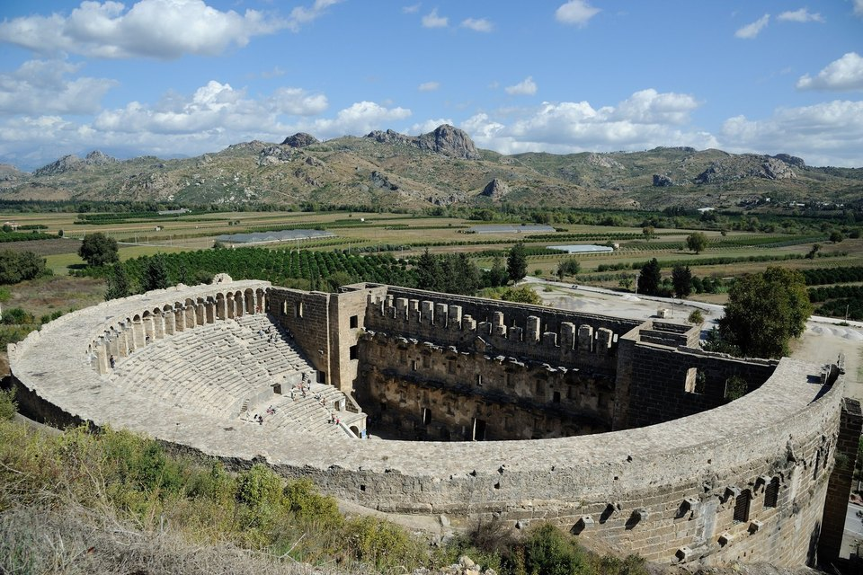

Turkey · Serik
Aspendos audio guide
6 stops · 11 min · offline · plays as you arrive
The guide price is €1.99. This button is a placeholder. It does not open checkout and does not take payment. Email hello@getearwise.com.
A 6-stop offline audio guide to Aspendos in Serik, recorded in 10 languages and designed to play as you arrive. It covers the remarkably intact Roman theatre, stage facade, and nearby aqueduct. Download once; you will not need a signal on the ground.
Stops
- 1
A river city
In front of the tall outer wall of the theatre (the back of the stage building), near the entrance. This is stop 1 on the route.
- 2
Inside the theatre
In the orchestra or on the lower seats, looking up at the seating. This is stop 2 on the route.
- 3
The stage and a sultan's palace
Facing the two-storey stage building (scaenae frons) with its five doorways. This is stop 3 on the route.
- 4
The upper city
On the flat-topped acropolis hill, near the agora, the basilica and the tall fountain wall. This is stop 4 on the route.
- 5
The aqueduct
At the northern edge of the hill, looking at the long line of arches across the valley. This is stop 5 on the route.
- 6
The Eurymedon Bridge
At the Seljuk bridge over the Köprüçay river, south of the Aspendos acropolis, on the road in from the coast highway. This is stop 6 on the route.
On the map
All 6 stop pins for this guide are marked. Open map